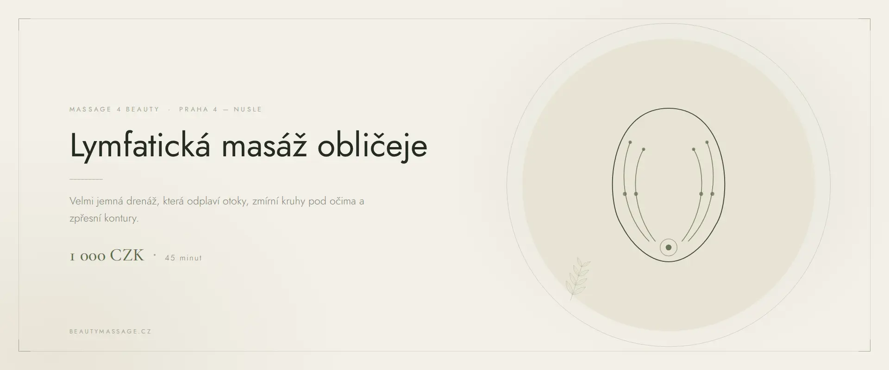

Facial massage · Prague 4
Facial Lymphatic Massage in Prague
The gentlest of all facial massages. It carries away retained water, reduces under-eye bags and gives the face its sharp contours back — often within a single treatment.
What facial lymphatic massage is
Facial lymphatic massage, also called facial lymphatic drainage, is a very gentle technique working just beneath the skin. Unlike lifting or fascial massage, nothing is pressed into the muscle here — the aim is not to shape the tissue but to carry excess fluid out of it.
The face holds a dense network of lymph nodes, mainly around the ears, jaw and neck. When the lymph stops moving — after a sleepless night, during allergy season, after salty food, or simply in the morning — the face swells, features blur and bags appear under the eyes. Facial drainage moves that fluid in the right direction.
The sequence of the treatment
- Opening the lymph nodes We always start at the neck and behind the ears. Without opening them the lymph has nowhere to drain.
- Draining neck and jaw Light strokes lead fluid from the jaw and neck down to the collarbone nodes.
- Draining the face I work from the centre of the face outwards — forehead, eye area, cheeks. The pressure is very light.
- Eye area and settling The gentlest part of the treatment. This is where the effect on bags shows most.
What facial lymphatic massage does
- drains swelling and reduces under-eye bags
- sharper facial contours and more visible cheekbones
- brightens grey, tired-looking skin
- relief for those prone to swelling and allergies
- supports skin healing after procedures
- an immediate visible effect with no redness at all
Who it suits
Facial lymphatic massage is ideal if you wake with a swollen face, are prone to under-eye bags, suffer seasonal allergies, or are recovering from an aesthetic procedure. It is so gentle that it suits even very sensitive skin and visible capillaries.
When we do not massage
- acute inflammation, cold sores or skin inflammation
- lymphatic system disorders without a doctor's approval
- cancer under active treatment
- an overactive thyroid without consulting your doctor
- fever and acute illness
Not sure? Call me before booking on +420 721 761 411 and we will talk it through.
Price of facial lymphatic massage
Frequently asked questions
What is the sequence of a facial lymphatic massage?
We always begin by opening the lymph nodes at the neck and behind the ears, continue with drainage of the jaw and neck, and only then the face, working from the centre outwards. The gentlest part is the eye area, where the treatment ends.
How quickly does the swelling go?
Most clients see a difference immediately after the treatment, especially around the eyes. The effect usually holds for two to three days.
Does it help with under-eye bags?
Yes, where the bags are caused by retained fluid. If they are fat pads or loosened skin, the massage will soften them but not remove them.
How does it differ from facial massage?
A classic facial massage works the muscles and presses deeper. Lymphatic massage is incomparably gentler and addresses fluid, not shape. We often combine the two in one treatment.
Can I come after an aesthetic procedure?
Yes, drainage speeds up healing and the clearing of swelling. Always get approval first from the doctor who performed the procedure.
Book your facial drainage
The studio is in Prague 4 — Nusle, a short walk from Pankrác and Vyšehrad. Booking online takes a minute.